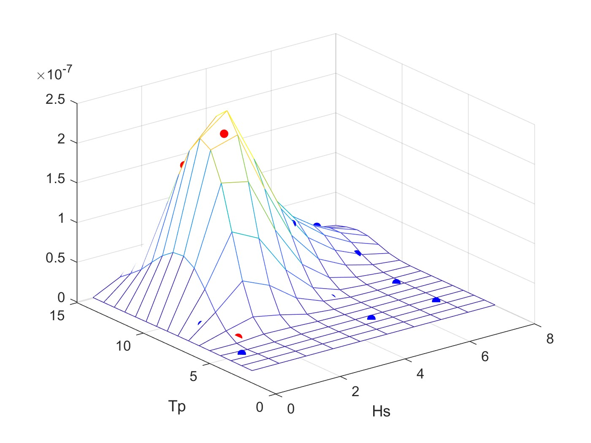

- | CV
-
 HUST
HUST
-
 ResearchGate
ResearchGate
-
 GitHub
GitHub
-
 tianjiao_dai@163.com
tianjiao_dai@163.com
Visitors
About me
Dr. Dai works as an assistant professor in the School of Naval Architecture and Ocean Engineering in Huazhong University of Science and Technology. She mainly focuses on the power cable stability on sea bottom, cross section design of power cable and dynamic umbilical, stress analysis of nonbonded flexible pipe and dynamic umbilical and the power cable application in the wind turbine network. She also has extensive working experience in full scale test of nonbonded flexible pipe and dynamic umbilical and corresponding numerical analysis.
Education
- 2014 - 2018, Ph.D. in marine technology, Norwegian University of Science and Technology (NTNU), Norway
- 2011 - 2013, M.S. in Marine technology, Norwegian University of Science and Technology (NTNU), Norway
- 2007 - 2011, B.S. in ocean engineering, Harbin engineering University
Project
- 2021-2023, Fatigue mechanism of dynamic umbilical in deep ocean.
Publications
|  |
|